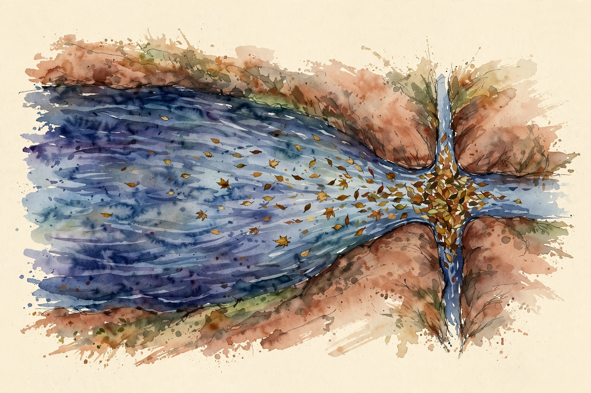
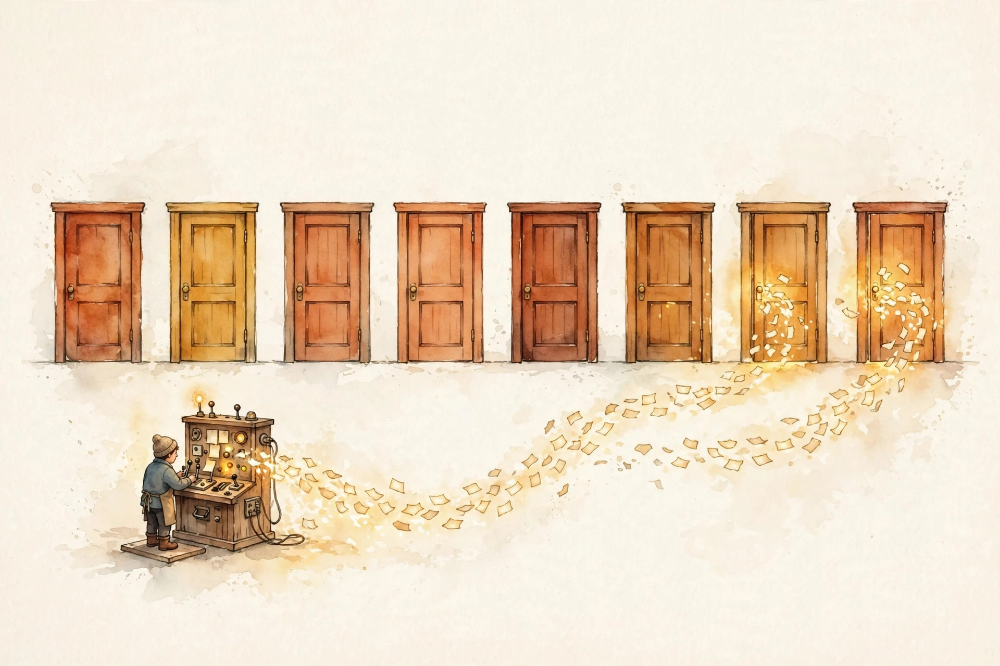

Companion · narrated from the lesson document
Standard attention costs O(T^2 d) and holds a KV cache that grows with every token. This companion tours the escapes: local windows, shared KV heads, latent compression, linear recurrences, state-space models, gated memory, and mixture-of-experts, the conditional compute that decouples parameters from FLOPs.
From the lesson The idea, and every number beside it, comes from the cited section of u04_attention_moe.md. The phrasing is the companion's.
Illustration Invented by the companion: an analogy, a toy with made-up values, or a what-if. Never lecture content.
companion Companion voice: the idea above the tag is from the lesson. The generalization below it is the companion's.
Provenance: no full lecture transcript exists for this session. The page narrates the lesson document content/v2/cs336/lessons/u04_attention_moe.md, not a video. Claim class: REQUESTED-BRANCH. Every number carries the lesson section that reports it. The reference implementation is visuals/compute_u04.py, executed 2026-10-06.
Section 1 · Remediation
From the lessonRemediation
Standard attention costs O(T^2 * d) FLOPs and O(T^2) memory for scores, plus a KV cache of 2 * kv_heads * dh bytes per token per layer. Two pain points follow: compute at long T, and cache bytes at long T. Every mechanism in this unit attacks one or both.
From the lessonRemediation
The baseline the lesson fixes for the whole unit: B=2, T=1024, d=512, h=8, L=12, bf16. The MHA KV cache is 50.3 MB. One layer's full attention is 2.15 GFLOP. From visuals/compute_u04.py, executed 2026-10-06. The worked check: halving kv_heads halves the cache, while the score FLOPs do not move, because queries still number h.
From the lessonRemediation KV cache toy. The lesson's formula, your config: 2 * kv_heads * dh bytes per token per layer, times B * T * L.
B T
d h
KV heads g L
Press the button.
bf16, 2 bytes per element. Formula from the remediation block.
Compute and cache are separate pain points. A mechanism can fix one and leave the other.
Section 2 · C01
From the lessonC01 §2, §3, §5
Must every query read all 1024 keys? The toy: window w=128 gives 0.27 GFLOP per layer versus 2.15 full, an 8.0x cut, from compute_u04.py. The ratio equals T/w exactly. The mental model: a sliding window. Query at t sees keys in [t-w, t]. Most linguistic dependencies are local, so the window keeps most of the signal at a fraction of the cost. Each query scores w keys instead of T. The mask is banded plus causal. Dilated or strided patterns extend the reach without dense cost: dilated reads keys at t, t-d, t-2d, and so on, while strided gives a few global tokens full sight.
From the lessonC01 §9, §10
FLOPs and score memory both scale with T*w. The KV cache is unchanged: keys are still stored for the window. Selection boundary: full attention for short T or when long range matters, linear attention (C04) when the T-squared must go entirely. Local wins when w covers the effective context.
visuals/compute_u04.py, executed 2026-10-06.A passkey-retrieval task with the key 5000 tokens back and w = 128 can never see the answer. The failure is silent: fluent wrong answers.
Section 3 · C02
From the lessonC02 §2, §3, §5
Do 8 heads need 8 separate KV copies? The toy, same config as the baseline (B=2, T=1024, d=512, L=12, bf16): MHA with 8 KV heads holds 50.3 MB, GQA-2 holds 12.6 MB, MQA with 1 KV head holds 6.3 MB. Queries stay 8 in all three. The mental model: KV heads are shared read-only memory, query heads are the readers. MHA gives every reader a private copy. MQA gives one copy to all readers. GQA lets groups of readers share. Quality degrades gracefully as sharing rises, while cache shrinks proportionally.
From the lessonC02 §5, §6
The mechanism: K and V projections output (B, T, g*dh) instead of (B, T, d), and each query head reads KV head h mod g (or a group mapping). Scores stay (B, h, T, T): the FLOP count barely moves, the bytes collapse. The lesson's numbers, executed 2026-10-06: 50.3, 12.6, 6.3 MB for g = 8, 2, 1, exactly proportional to g.
visuals/compute_u04.py (executed 2026-10-06). MLA with latent dim 128 matches GQA-2's 12.6 MB with a learned compression instead of head sharing.Halving kv_heads halves the cache while score FLOPs do not move. But converting an MHA checkpoint to MQA by averaging KV heads drops more quality than a trained MQA.
From the lessonC02 §9, §10
Cache divides by h/g. Quality notes: MQA can lose a little on some tasks, GQA-8 is the common sweet spot. GQA is the default for new models. MQA fits when decode memory dominates everything.
Section 4 · C03
From the lessonC03 §2, §3, §5
MLA compresses K and V into a low-rank latent vector per token (down-projection), then up-projects per head at use time. The cache stores the latent, not the heads. Rank is the knob: smaller latent, smaller cache, more compression loss. The toy: MLA with latent dim 128 gives 12.6 MB on the same config, like GQA-2, but the latent is learned, not a head subset. The mechanism: c = x W_down (d to dc), cached. Per head: k_h = c W_up_k, v_h = c W_up_v. The up-projections run per query during decode: extra FLOPs traded for fewer bytes. The absorption trick can fold the up-projection into the query side.
From the lessonC03 §9, §10, §11
Cache shrinks by d/dc. Decode adds the up-projection FLOPs per token. Net win when memory-bound, and decode usually is. Selection boundary: GQA when simplicity matters, MLA when the cache must go lower than MQA allows. MLA's complexity pays off at long context. The failure case: dc set too small means the latent cannot carry the key distinctions heads need, and attention blurs. The assumption "low rank suffices" breaks past the task's rank. The symptom is flat attention weights.
Section 5 · C04
From the lessonC04 §2, §3, §5
Can attention be a recurrence? Replace softmax with a feature map: softmax(QK-transpose)V becomes phi(Q)(phi(K)-transpose V) / normalizer. The bracketed term is a fixed-size state updated per token: attention becomes an RNN with a matrix-valued hidden state. The recurrent form: out_t = phi(q_t)-transpose S_t / phi(q_t)-transpose z_t, with S_t = S_{t-1} + phi(k_t) v_t-transpose. This equals the causal no-softmax attention by associativity of matrix multiplication.
From the lessonC04 §6, §9
The lesson's run, executed 2026-10-06: with phi(x) = relu(x) + eps, the recurrent form matches the quadratic form to 2.22e-16. Exact, not approximate, for the same kernel. Costs: O(T*dh^2) time, O(dh^2) memory, linear in T. The catch is expressivity: the kernel is weaker than softmax.
The recurrent and quadratic forms match to 2.22e-16. Same kernel, same math, just regrouped by associativity.
From the lessonC04 §10, §11
Selection boundary: softmax attention for quality, linear when T makes T-squared impossible and the task tolerates the kernel. Gated variants (C06) close some of the gap. The failure case: phi = identity with negative inputs makes the "probabilities" go negative and the normalizer can hit zero. The assumption "phi keeps things positive" is load-bearing. elu+1 or relu+eps are the standard guards.
Section 6 · C05, C06
From the lessonC05 §2, §3, §5
What if the state were a vector, not a matrix? A linear SSM keeps h_t = A h_{t-1} + B x_t with h in R^N: O(T*N) time, O(N) memory, no T-squared anywhere. State-space models compress history into a fixed vector through a learned linear dynamical system. Selectivity (Mamba) makes A and B input-dependent so the state can forget. Attention remembers everything. SSMs remember a summary. Unrolling gives a convolution with kernel K = (CB, CAB, CA^2B, ...): training parallelizes via FFT or scan, inference is a recurrence. Selectivity breaks the convolution view but keeps the scan.
From the lessonC05 §6, §9, §11
Hand-verified recurrence on a scalar SSM (A=0.9, B=1, C=1, x=[1,0,1]): h = [1, 0.9, 1.81], y = h. The lab checks the unrolled-versus-recurrent match. Costs: O(T*N) time, O(N) state, the cheapest long-context option. The price is recall precision on long-range lookups. The failure case: a fixed non-selective SSM on a passkey task averages the key away and recall fails. The assumption "a summary suffices" breaks on exact-recall tasks. Selectivity or attention is the fix.

From the lessonC06 §2, §3, §5, §6
Linear attention forgets nothing and overwrites blindly. How do we get selective memory? Gates are learned valves on the state: S_t = alpha_t * S_{t-1} + beta_t * phi(k_t) v_t-transpose. alpha controls forgetting, beta controls writing. The delta rule goes further: remove the old value of the key before writing the new one, like editing a memory slot. S_t = S_{t-1}(I - beta_t phi(k_t) phi(k_t)-transpose) + beta_t outer(phi(k_t), v_t): the projection removes what the key already stored. The lab check: with alpha=1, beta=1 the gated form reduces to plain linear attention (matches C04 to 1e-12). With alpha=0 the state holds only the current token.
Attention remembers everything. SSMs remember a summary. Constant gates, not input-dependent, cannot do content-based forgetting and behave like a leaky average.
From the lessonC06 §9, §10
Same O(T*dh^2) as linear attention plus the gate projections. The win is quality, not speed. Selection boundary: plain linear attention (simpler, weaker memory), SSMs (vector state). Gated variants are the current quality frontier for subquadratic attention.
Section 7 · C07
From the lessonC07 §2, §3, §5
How do models reach 100B+ parameters without 100B of compute per token? The toy from compute_u04.py: 8 experts of 3.15M params = 25.17M total, but only k=2 are active per token, 6.29M active, a 4.0x ratio. MoE is conditional compute: the model owns many FFNs (experts) but consults only k per token. Parameters scale with E, compute scales with k. The router decides who sees what. Total params = E * expert_params. Active per token = k * expert_params. Ratio E/k. The router adds d*E params, negligible. Communication appears in distributed settings (U09-C06).
visuals/compute_u04.py (executed 2026-10-06). Dense 3.15M, MoE total 25.17M, active 6.29M, ratio 4.0 = E/k = 8/2.
E = 64, k = 1, no load balancing: 3 experts get all tokens, 61 starve. The model is effectively a 3-expert model with 64 experts' memory.
From the lessonC07 §10
Selection boundary: dense scaling (simpler, more FLOPs per quality point), wider dense FFN. MoE wins when parameters are cheap and FLOPs are dear.
Section 8 · C08, C09
From the lessonC08 §2, §3, §5
Who decides which experts fire? Scores = softmax(xW), W of shape (d, E). Token t picks the top-k scores, and the output is the score-weighted sum of expert outputs. The router is a tiny classifier over experts. Its scores are both the selection signal and the mixing weights. Softmax forces competition (weights sum to 1). Sigmoid lets experts fire independently. Top-k selection is non-differentiable: gradients flow through the selected experts' weights.
From the lessonC08 §6, C09 §2, §5
The lesson's run, executed 2026-10-06: on 16 random tokens with E=8, top-2 selection gives loads [5, 5, 3, 2, 3, 5, 4, 2], visibly imbalanced without any balancing loss. Why k=2 and not 1 or 8? k=2 of 8 gives the 4.0x param/compute ratio with a weighted blend. k=1 halves active compute but makes routing discontinuities sharper: k=1 is hard selection (one expert owns the token), k=2 blends two opinions. Larger k smooths training and costs compute linearly. With k=E the MoE is a dense weighted ensemble, which defeats the purpose. k=2 is the common default.
Illustration MoE toy. Set E experts and top-k. The toy reports total params, active params, and the ratio, on the lesson's 3.15M-expert scale.
Experts E top-k
Press the button.
Expert size fixed at 3.15M params (C07 §6). Ratio = E/k.
Router collapse: the router sends everything to one expert early, that expert learns fastest, and the rich get richer.
From the lessonC08 §10, C09 §10, §11
Alternatives: learned routers versus hash routing (fixed assignment, no learning). Learned wins on quality, hash wins on simplicity and perfect balance. Soft routing (all experts, weighted) is smoother but saves no compute. Top-k is the standard because it saves the compute. One convention trap: renormalizing top-k weights versus not gives different effective learning rates per expert and different load statistics. Match the convention to the checkpoint.
Section 9 · C10, C11
From the lessonC10 §2, §3, §5, §6
What happens when 10 tokens pick the same expert? Capacity is a per-expert inbox size. Tokens beyond capacity are dropped: they skip the expert, and their representation passes through unchanged or via residual. Total assignments T*k spread over E experts: mean T*k/E. The factor (often 1.0 to 1.25) gives headroom. The lesson's run, executed 2026-10-06: 16 tokens, k=2, E=8, factor 1.25 gives capacity = 1.25 * 16 * 2 / 8 = 5 per expert, loads [5, 5, 3, 2, 3, 5, 4, 2], 3 tokens dropped. Higher factor means more memory and fewer drops. Factor 1.0 is tight, 1.25 is common during training, inference often uses no cap (all tokens processed, variable time).
visuals/compute_u04.py (executed 2026-10-06). Capacity 5 per expert at factor 1.25. Three tokens were dropped.From the lessonC11 §2, §3, §5, §6
How do we stop the rich-get-richer collapse? The aux loss penalizes the correlation between "fraction of tokens sent to e" and "mean router probability for e". L_aux = alpha * E * sum over e of frac_e * pbar_e. Under uniform routing with top-k: frac_e = k/E, pbar_e = 1/E, so L_aux/alpha = k. Minimizing pushes both toward uniform. The lesson's run, executed 2026-10-06: aux = E * sum(frac_e * mean_prob_e) = 2.2893 versus uniform 2.0. The 0.29 gap quantifies the imbalance seen in the loads. One extra scalar loss, negligible compute. Too large an alpha hurts task loss: the router optimizes balance over quality.
Factor 1.0 with imbalanced routing drops a large fraction of tokens, and the model undertrains on exactly the tokens the router preferred. And alpha = 1.0 makes the router perfectly uniform, so experts stop specializing.
From the lessonC10 §10, C11 §10
Alternatives: no dropping with dynamic batching (complex), expert-choice routing where experts pick tokens (balance by construction). Standard: token-choice with capacity. The aux loss is the standard for token-choice. z-loss handles router logit magnitudes.
Section 10 · C12, synthesis
From the lessonC12 §2, §3, §5, §6
Is a 25M-param MoE "bigger" than a 6M dense model? It has the capacity of the former and the per-token cost of the latter. Three numbers, not one: total parameters (memory, capacity), active parameters per token (compute, latency), and active FLOPs (the training and inference bill). Headlines quote the first. Budgets need the second and third. Total = E * expert + router. Active = k * expert + router. Active FLOPs per token = k * expert_flops. Memory must hold the total. The bill charges the active. The lesson's run, executed 2026-10-06: total 25,165,824, active 6,291,456, ratio 4.0.
Provisioning inference memory from active params OOMs the server. All experts must be resident.
From the lesson The arc, end to end. Attention costs O(T^2 d) with a 2*kv_heads*dh-byte cache per token per layer (remediation). Local windows cut FLOPs by T/w and leave the cache (C01). MQA and GQA share KV heads across query heads: cache divides by h/g, FLOPs barely move (C02). MLA compresses K and V into a learned latent: below one KV head of cache at the price of decode up-projections (C03). Linear attention regroups the math into a recurrence, exact for the same kernel (C04). SSMs compress history into a vector state, cheapest at long context, weakest at exact recall (C05). Gates add selective forgetting and delta edits (C06). MoE owns E experts and consults k: parameters scale with E, compute with k (C07). The router is a tiny classifier whose scores select and weight (C08, C09). Capacity caps each expert's inbox and drops the overflow, the aux loss keeps the loads honest (C10, C11). And the honest ledger reports total, active, and active FLOPs (C12).
From the lesson Where the unit points next, in the lesson's own forward links: U07 fuses the attention kernels and removes the score materialization. U09-C06 carries the all-to-all communication that expert parallelism adds. U11 inherits the decode regime, where the KV cache rules latency.
Wisdom index
Each nugget states the idea in plain words, why it matters, and the transferable principle. Every one is anchored to its lesson section.